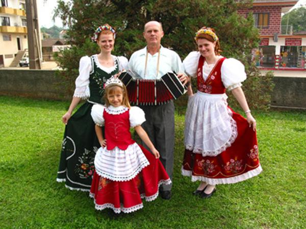
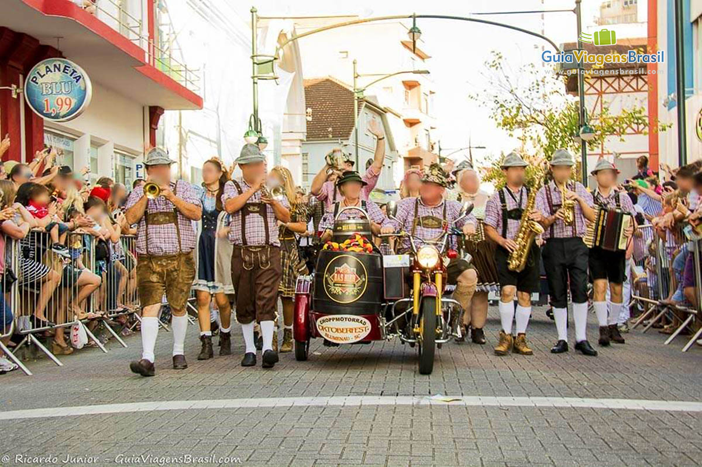

Folclore: O gritador, quando os jesuítas foram expulsos do Brasil, muitos deles enterraram seus tesouros na espanca de retornar. Quando todos estavam cavando os buracos para enterrar os tesouros um homem pedia que eles gritasse para saber a localização de cada um, mas esse homem não foi embora, continuou no local para proteger o tesouro enterrado e ao morrer sua alma ficou presa no local e quando ele escuta gritos por perto ele acha que são seus amigos e vau atrás, se ele chegar até você o desafiará para um duelo, se você ganhar, fica com o tesouro, mas se perder, trocará de lugar com ele e cuidará do tesouro eternamente.
Vestimentas: o Dirndl, um vestido típico da Alemanha para as mulheres e o Lederhose, um short de couro para os homens.
Influência: Influência mais forte é a dos alemães, tendo influenciado nas roupas tipicas e festas.
Costumes: o principal costume de Santa Catarina é o Circuito das festas de outubro, que conta com a Oktoberfest, em Blumenau, o Festival de Dança de Joinville, a Feta do Pinhão em Lages, entre mais algumas outras.
